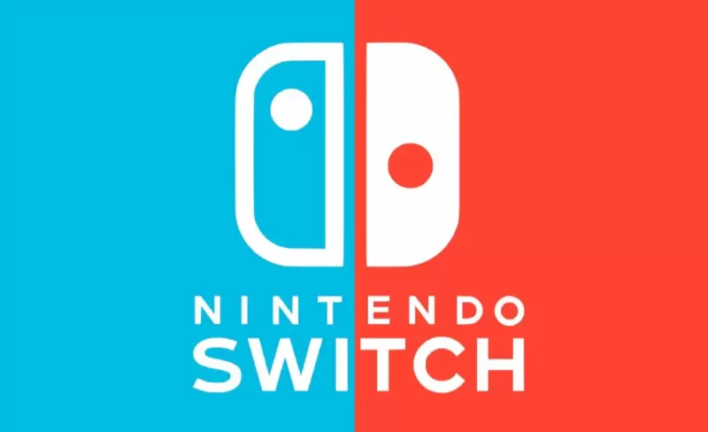

Switch520 小白第一次上手：从零到跑通第一个游戏
第一次接触 Switch520 不知道从哪下手？这篇带你从下载安装到打开第一个游戏，五分钟走完最短路径，再告诉你新手最值得先碰的三个功能和三个常见坑。
这篇能带你从完全不懂到用起来，不需要任何基础——你只需要一台电脑、一个网盘账号和愿意花五分钟。
它到底是干嘛的
如果把 Switch 游戏机比作一台能装各种软件的电视机，那 Switch520 就是一个帮你把软件搬进电视的工具箱。它本身不是游戏，也不是模拟器，而是一个整理好的资源分发渠道——把别人已经测好、打包好的 Switch 游戏、补丁、DLC 全部集中在一起，你只需要挑好点下载就行。
打个比方：Switch 自带的商店像连锁超市，东西全但经常断货；Switch520 更像一个社区便利店的货架，上面的每一件商品都有人试过、贴了标签、告诉你这个版本好不好装。你不需要自己去网上搜资源、对比版本号、问别人稳不稳定——打开就能拿。
它的官网就是你找资源的入口，所有游戏按分类整理好，点进去看详情页就知道体积、版本、更新时间。下载统一走网盘，拿到文件后再装进主机。整个过程像网购但更轻量——没有购物车、没有支付，拿到文件就行。
五分钟上手：第一次跑通的最短路径
别担心，不需要你懂什么「整合包」「大气层」这些术语——跟着下面五步走，第一次就能把一个游戏放进主机里。
第一步：下载资源
打开 Switch520 的官方下载页面，挑一个你想玩的游戏。详情页里会标明体积、版本号、有没有中文，确认后下载就行。下载下来的是压缩包，解压后你应该能看到一个或几个 .nsp、.xci 或 .nsz 文件——这就是你要装进主机里的东西。

第二步：两分钟核对
这一步不能省，但真的只要两分钟。打开你解压出来的文件夹，数一下文件数量对不对，然后点开最大的那个看一眼体积——几 KB 的文件肯定是下错了东西。文件名里通常带版本号和区域，比如 [v1.2.0][中文]，看一眼和你要装的是不是同一个版本就够了。全对了就进下一步，有疑问回下载页重新确认。
第三步：装进主机
把主机连上电脑，用安装工具（一般整合包里会自带）把游戏文件拖进去就行。整个过程和往 U 盘里拷文件差不多——点一下「添加游戏」，选中你刚才解压出来的文件夹，等进度条跑完。
第四步：关机重启
装好游戏后关机，再开机。主机的启动菜单里会多出一个自制系统的入口（整合包一般默认就是它），选中回车进去。
第五步：打开游戏
进入自制系统后，桌面上就能看到你刚装的游戏图标了。双击启动——第一次可能慢一点，等个十几秒就能看到游戏画面。恭喜，你成功了。
上手后先玩这三个功能
游戏能玩了，接下来这三个功能是新手最值得先碰的——每个花五分钟试一下，你会发现很多之前想都不敢想的事原来这么简单。
1. 呼出 Tesla 菜单开关金手指
游戏运行中同时按住三个键：L 键 + 十字键下 + 右摇杆按下，屏幕会弹出一组悬浮面板。这就是 Tesla 菜单，相当于给游戏装了一个「游戏内工具箱」。进入 EdiZon 面板选 Cheats，你会看到一个勾选列表——勾上就开启，取消就关闭，按 B 退回游戏后规则立刻生效。别一次全开，一条一条试，有冲突你能立刻知道是哪条出的问题。
你会发现：原来不需要退出游戏就能随时开关修改，想调什么调什么，调完还能关回去，一点痕迹不留。
2. 切换虚拟系统和真实系统
这一点特别重要——你的主机其实有两套系统。真实系统（sysNAND）是出厂自带的，虚拟系统（emuNAND）是把真实系统复制一份存到 TF 卡里的。日常装游戏、用金手指这些事，全部在虚拟系统里做。虚拟侧玩坏了删镜像重建就行，主机本身毫发无损；真实系统保持干净，用它登录正式账号、玩正版联机，风险小得多。
开机时 hekate 启动菜单里选哪个「Atmosphere emuMMC」选项进哪一侧——看到自己进对了就继续，进错了关机重选。你会发现：为什么有人装了一百多个游戏还能正常联机？因为他们从来不在真实系统里装任何自制的东西。
3. PC 上跑模拟器
如果你的主机不在手边，或者想在大屏幕上玩，试试用 PC 模拟器（比如 Ryujinx）。下载解压到纯英文路径的文件夹，导入自己主机导出的密钥和固件，然后添加游戏目录——模拟器就能直接识别你之前装的 NSP/XCI 文件，双击启动。显卡有余力的话把分辨率调到 2x 或 3x，清晰度比主机上还高。
你会发现：模拟器其实就是一个「能在电脑上玩 Switch 游戏」的程序，配置一次就能重复用，而且它是免安装的，解压就能跑。想深入研究密钥怎么从主机导出、不同模拟器各自的兼容性差异，可以去翻switch520文档，里面有 PC 模拟器路线的完整说明。
小白的三个常见疑问
Q：下的资源解压出来还是压缩包怎么办？
这是套娃压缩——有些资源为了方便分享会套两层甚至三层压缩包。继续解，直到拿到 .nsp、.xci 或 .nsz 文件就对了。如果解出来的东西是个文件夹，里面有游戏数据（通常是 NCA 文件组合），那也是对的。
Q：装游戏时报 2002 开头的错误码？
2002 系列错误大多和文件有关——可能是下载没下全、解压不完整、或者文件本身有损坏。先对照上面的核对清单再走一遍，确认文件体积、数量、格式都对。还是不行的话回下载页重新下一遍，别硬怼。
Q：开了金手指但没效果？
先检查 Cheats 列表是不是空的——空的说明金手指文件没放对位置，或者 build id 对不上。列表有内容但勾了没反应，大概率是金手指版本和游戏版本不匹配，换对应版本的金手指试试。实在不行就先关了金手指，确认游戏本体能正常跑再调。
总的来说，Switch520 的门槛其实很低——下载、核对、安装、开机、打开，五步走一遍你就彻底懂了。稳扎稳打，别贪快就行。这套资料文档我同步维护了三个仓库方便备份和不同网络环境访问：GitHub 上有一份完整的，Gitee 和 GitCode 分别照顾国内用户的访问需求，三处内容保持同步更新。